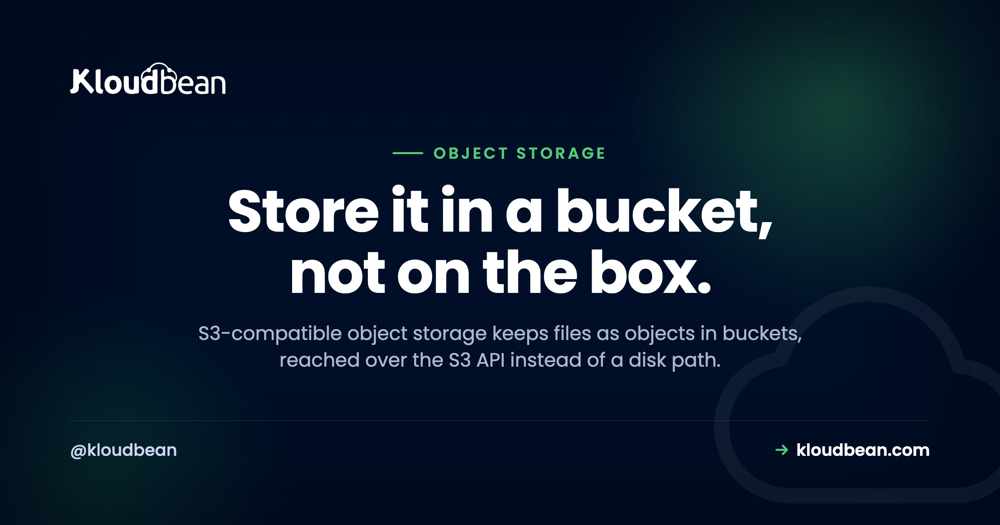

S3-Compatible Object Storage: Why Your Files Don't Belong on the App Server

Your app server's disk is 82% full and climbing. You SSH in, run du -sh *, and there it is: a folder of user uploads quietly eating the box. Avatars, invoices, a few enormous video files somebody forgot about.
I'll say the unpopular part first. Those files should never have been on the server. Not the uploads, not the media, and definitely not the backups. They belong in S3-compatible object storage, and moving them makes the server a lot easier to run. This is what object storage actually is, why "S3-compatible" is the word that matters, and the commands that make it click.
Object storage keeps files as objects in flat buckets, addressed by a key and reached over the S3 API (HTTP), not by a filesystem path. "S3-compatible" means your existing AWS SDKs and the aws CLI work against it by pointing at a new endpoint. Put uploads, media, and backups in a bucket so the app server stays stateless and you can rebuild it anytime without losing data.
Object storage vs the disk you already understand
You know how a filesystem works. Folders inside folders, a file at a path like /var/www/uploads/2024/avatar.png, and you open, seek, and append to it. Block storage is the layer under that, raw volumes your OS formats and mounts. Both are tied to a machine. That's the catch.
Object storage throws out the folder tree. Instead you get buckets, and inside a bucket you store objects. An object is just your file plus some metadata (content type, size, custom tags) and a key, which is the object's name. The key can look like a path (uploads/2024/avatar.png), but there are no real directories underneath. It's a flat namespace with slashes in the names. You don't mount it. You talk to it over HTTP: PUT to store an object, GET to fetch it, DELETE to remove it.
That one design change buys you a lot. Objects are replicated across many machines, so a single dead disk doesn't lose your file. There's no volume to fill, so you never "run out of space." And because nothing lives on your server, you can destroy and rebuild that server whenever you like. The files don't care.
Why "S3-compatible" is the part that matters
Amazon shipped S3 in 2006, and its HTTP API became the thing everyone else copied. So "S3-compatible" isn't a compliance badge. It's a promise that your tools already work. The same request format, the same authentication scheme, the same aws s3 commands. Point them at a different endpoint and you're done.
That portability is the quiet superpower here. You're not learning a proprietary SDK or locking your code to one vendor. The official AWS SDKs (boto3, the JavaScript v3 client, the PHP and Go SDKs) all take an endpoint parameter. Change one line and the same code talks to a different provider's storage. The CLI first, because it's the fastest way to prove a bucket works:
# list what's in a bucket, on any S3-compatible endpoint
aws s3 ls s3://my-bucket --endpoint-url https://s3.your-provider.com
# copy a file up
aws s3 cp report.pdf s3://my-bucket/exports/report.pdf \
--endpoint-url https://s3.your-provider.comThe only new thing there is --endpoint-url. Drop it and the command hits AWS. Add it and the identical command hits whichever S3-compatible store you're using. That's the whole trick, and it's why teams standardize on the S3 API even when they never touch AWS.
In code it's the same story. A tiny Python example with boto3:
import os, boto3
s3 = boto3.client(
"s3",
endpoint_url=os.environ["S3_ENDPOINT"], # the only S3-specific bit
aws_access_key_id=os.environ["S3_KEY"],
aws_secret_access_key=os.environ["S3_SECRET"],
)
s3.upload_file("avatar.png", "my-bucket", "uploads/avatar.png")
url = s3.generate_presigned_url(
"get_object",
Params={"Bucket": "my-bucket", "Key": "uploads/avatar.png"},
ExpiresIn=3600, # a link that works for one hour
)And the Node shape, for the JavaScript crowd:
import { S3Client, PutObjectCommand } from "@aws-sdk/client-s3";
const s3 = new S3Client({
endpoint: process.env.S3_ENDPOINT,
region: "auto",
credentials: {
accessKeyId: process.env.S3_KEY,
secretAccessKey: process.env.S3_SECRET,
},
});
await s3.send(new PutObjectCommand({
Bucket: "my-bucket",
Key: "uploads/avatar.png",
Body: fileBuffer,
}));Notice the credentials come from environment variables, not from the source. Storage keys are as sensitive as a database password, so treat them the same way. There's more on that in environment variables done right.
What actually belongs in a bucket
Not everything, but more than you'd think. The test: if it's a file your app reads or writes, and it isn't code, it probably belongs in a bucket. The usual suspects:
- User uploads. Avatars, documents, anything people send you. This is the number-one thing to get off the local disk, because uploads on a server disk vanish on a rebuild and can't be shared across two app instances.
- Media libraries. A WordPress media folder, a photo gallery, a video collection. Usually the bulk of your storage and the heaviest thing you serve. Put a CDN in front of the bucket and visitors get files from a nearby edge instead of your origin.
- Backups. A backup on the same server it protects is not a backup. Database dumps and file snapshots want to live off-box, and a bucket is the cheap, durable home for them. More on that in the server backups guide.
- Static assets and exports. The hashed JS and CSS from a build, plus generated CSV reports and invoices your app hands users. Write them to a bucket, serve a link, and stop accumulating temp files.
Two things stay out. Your live database, which needs fast random-access storage that a bucket can't give it, so use a managed database for that and only park the database backups in a bucket. And your running application code, which needs to be deployed to the server, not fetched from storage. Get those two exceptions right and the rest is fair game.

The real payoff: a server you can throw away
The position I'll defend: a production app server should be stateless, meaning you could delete it and stand up a fresh one and lose nothing. That's the whole game. It lets you scale out, recover from a bad node in minutes, and sleep through a disk failure. The moment you write a user's file to the local disk, you break it. Now that server holds data nobody else has, and it can't be replaced without a careful copy-off first.
Object storage is how you keep the server disposable. Files go to the bucket, sessions go to Redis, data goes to the database, and the server itself becomes a stateless worker that any request can hit. A common mistake we see: an app runs fine on one box for a year, the team adds a second box behind a load balancer, and suddenly half the uploaded images 404 because they only exist on the first server. Buckets from day one avoid that whole class of bug. Put files in object storage before you need to, not after the incident.
Public vs private buckets, and why you care
A bucket is private by default, and that's usually right. Objects in a private bucket aren't reachable by a raw URL. To hand a user a file, your app generates a presigned URL, a temporary link (the boto3 example above did exactly this) that grants access to one object for a set number of minutes, then expires. Great for invoices, private documents, paid downloads.
A public bucket serves objects to anyone with the URL, which is what you want for a site's images, CSS, and other visible assets. Default to private, and only make a bucket public when the content is genuinely meant for the open web. Flipping a bucket public to make it work is how private files end up indexed by Google. Set the access level deliberately.
| Local disk | Object storage (S3) | |
|---|---|---|
| Addressed by | Filesystem path | Bucket + key, over HTTP |
| Survives a server rebuild | No | Yes |
| Shared across servers | No | Yes |
| Capacity | Fixed disk size | Effectively unlimited |
| Durability | One disk | Replicated |
| Good for | Temp files, the OS, code | Uploads, media, backups, exports |
Moving files that are already on a server
If your uploads folder is already fat with files, you don't rewrite anything to migrate. You sync. The aws s3 sync command (or rclone, if you prefer) copies a whole tree into a bucket in one pass, and you can run it again to catch stragglers:
# first pass: copy the existing uploads into the bucket
aws s3 sync ./public/uploads s3://my-bucket/uploads \
--endpoint-url https://s3.your-provider.com
# run it again later; only new/changed files transferFor app-level file handling, most frameworks have a storage "driver" you repoint at S3 with config, not a rewrite. Laravel has an s3 disk, Django has django-storages, WordPress has offload plugins, Rails has Active Storage. In every case you're pointing existing tooling at a bucket, because they all speak the same S3 API.
How it fits the rest of your stack
Object storage is one piece of owning the whole stack instead of renting bits of it from five vendors. The bucket holds the files. A managed database holds the structured data. The app server, kept stateless, runs the code and scales out behind a load balancer when traffic climbs. On a busy site, moving media into a bucket is often the single biggest disk and bandwidth relief you'll get, which is why it shows up in nearly every scalable WordPress setup. Because it's all S3-compatible, the objects stay yours to export whenever you want.
One cost note before you commit to any provider: serving files out of a bucket can carry a bandwidth charge called egress, and it can dwarf the storage cost. It's worth understanding before the bill arrives, and we dug into it in the egress fees breakdown.
Get the files off the box, keep the server disposable.
Kloudbean gives you built-in S3-compatible object storage in the same dashboard as your servers, managed databases, and apps. Full AWS S3 SDK and CLI compatibility, public and private buckets, and objects you can export anytime. Start free at kloudbean.com or see pricing.
S3-compatible buckets · Managed databases · Automatic backups · Private networking · One dashboard · Free trial
FAQ
What is S3-compatible object storage?
It's storage that keeps your files as objects inside buckets, reached over the same HTTP API that Amazon S3 popularized. Because the API is a shared standard, the AWS SDKs and the aws CLI work against it directly. You point them at a different endpoint and everything else stays the same, which makes your code and your files portable rather than locked to one vendor.
How is object storage different from a normal filesystem?
A filesystem stores files at paths on a disk attached to one machine. Object storage stores objects by key in a flat bucket, reached over HTTP, with no server to mount. That means it survives server rebuilds, is shared across every app instance, replicates for durability, and never runs out of space the way a fixed disk does.
How do I use an S3 bucket from my code?
Use the AWS SDK for your language (boto3, the JavaScript v3 client, and so on) and set the endpoint to your provider's S3 URL, with the access key and secret loaded from environment variables. Then it's ordinary calls like put_object and get_object, or presigned URLs for temporary access. For quick tests, the aws s3 CLI with an --endpoint-url flag does the same thing from the terminal.
What should I store in object storage?
User uploads, media libraries, backups kept off the app server, built static assets, and generated exports or downloads. Anything that's a file rather than code, and that you don't want tied to one server's disk. Keep your live database out of it (use a managed database), and keep your running application code on the server.
Can I store my database in a bucket?
No. A live database needs fast, structured, random-access storage, which object storage isn't built for. Use a managed database engine for the running database, and store the database backups in a bucket so they sit safely off the machine the database runs on.
What's the difference between a public and a private bucket?
A private bucket keeps objects unreachable by a raw URL; your app grants access with temporary presigned links that expire. A public bucket serves objects to anyone with the URL, which suits site assets and images. Default to private and only make content public when it's genuinely meant for the open web.
How do I move files that are already on my server?
Sync them. The aws s3 sync command (or rclone) copies an existing folder into a bucket in one pass, and you can rerun it to catch changes. For your app's file handling, repoint the framework's storage driver (Laravel's s3 disk, django-storages, an offload plugin) at the bucket. That's config, not a rewrite, because they all speak the S3 API.
Does object storage work with a CDN?
Yes, and it's a common pairing. A CDN in front of a bucket caches objects at edge locations, so visitors get images, video, and static assets from somewhere nearby instead of your origin. That's faster for users and takes load off your server. Just budget for egress, since files served out of a bucket can carry a bandwidth charge.